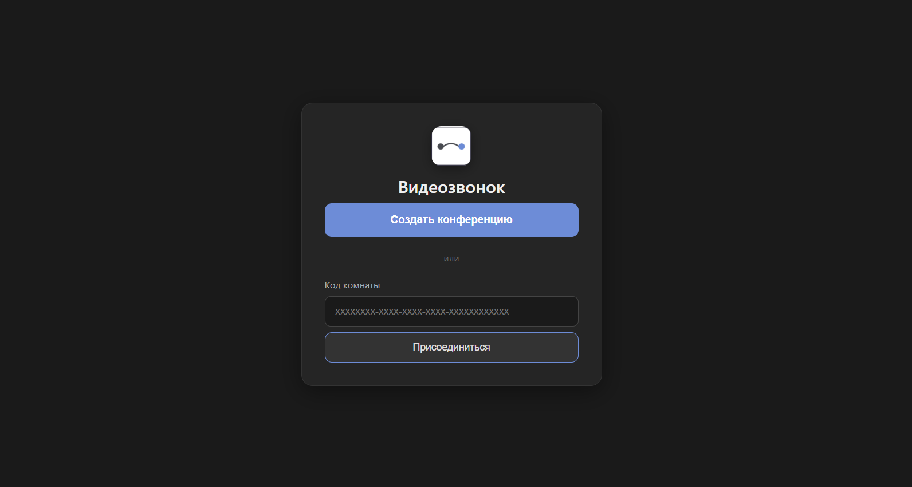
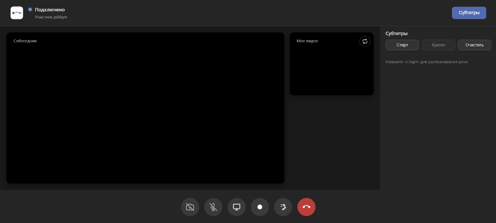

Видео и звук
Камера и микрофон, несколько участников, статус подключения в шапке
Веб-сервис на WebRTC: голос и видео идут напрямую (при возможности), сигнальный сервер согласует соединение. До четырёх человек в одной комнате.

Вид приложения

Основные возможности приложения
Камера и микрофон, несколько участников, статус подключения в шапке
STUN и при необходимости TURN, если прямой канал не устанавливается
Показ экрана или окна по HTTPS
Совместное рисование во время звонка
Распознавание речи в эфире, текст по репликам
Резюме разговора по накопленным субтитрам, кнопка «Кратко»
Три шага для пользователя
Откройте сервис, создайте комнату или введите код
Разрешите камеру и микрофон
Отправьте ссылку или код второму участнику. Дождитесь «Подключено»
Тестирующие группы
Быстро подключились, видео без обрывов. Субтитры и «Кратко» пригодились для заметок после созвона
Трое в одной комнате, кнопки понятные. Сценарии пройденфы успешно